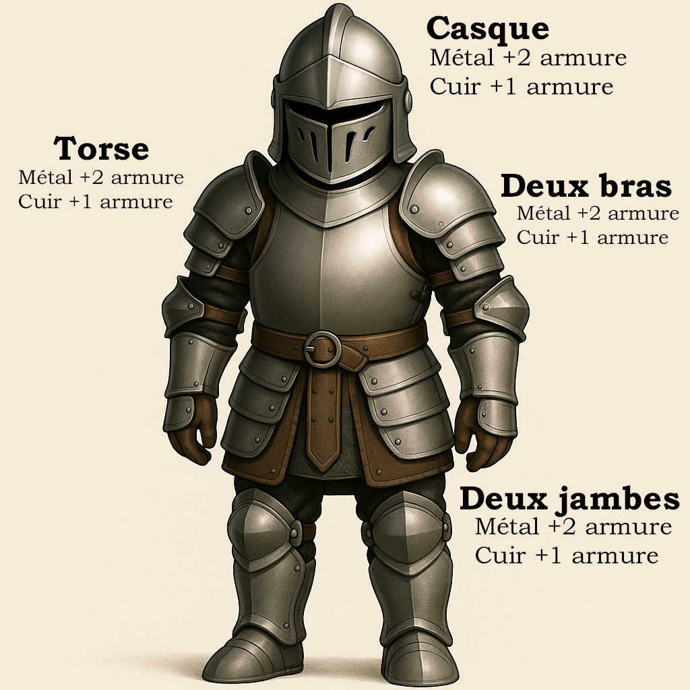
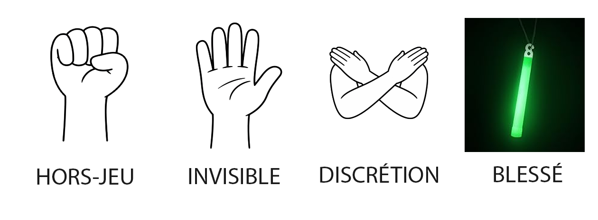

Règles de jeu
Limitations générales
Ces limites ne peuvent pas être dépassées, peu importe les objets ou compétences possédées :
- Points de vie permanents (PV) : 20 MAXIMUM
- Points de vie temporaires : 5 MAXIMUM
- Armure physique : 8 MAXIMUM
- Armure temporaire (naturelle) : 5 MAXIMUM
- Dégâts de base maximum : 4 dégâts MAXIMUM
- Dégâts par compétence unitaire (ex. : Coup puissant, Coup précis) : Aucune limite
Pour résumer, vos dégâts de base ne peuvent pas dépasser 4. Les attaques issues d'une compétence unitaire ne sont pas limitées et incluent les dégâts de trop (dégâts supplémentaires générés par des objets ou compétences exclusives).
Exemple : Vous possédez une épée magique qui inflige 5 dégâts de base, mais la limite est à 4. Vous frappez donc à 4. Cependant, si vous utilisez la compétence « Coup puissant » (+1 dégât), votre attaque « de trop » devient :
5 (dégâts de base de l'arme) + 1 (compétence) = 6.
Réglementation des armes et boucliers
| Type | Côté le plus long |
|---|---|
| Arme courte | 10 cm à 80 cm |
| Arme longue | 80 cm à 120 cm |
| Arme d'hast | 120 cm et plus |
| Arc | 10 lbs de pression MAX |
| Arme de jet | Aucune tige solide à l'intérieur |
| Petit bouclier | 10–30 cm |
| Moyen bouclier | 30–60 cm |
| Grand bouclier | 60–100 cm |
| Très grand bouclier | 100 cm et plus |
Toute arme ne respectant pas ces règlements sera considérée comme une arme exotique et devra être validée par l'équipe d'animation. Toutes armes ou boucliers fabriqués maison devront également être vérifiés et validés par l'équipe d'animation.
Dégâts de base des armes
| Type d'arme | Dégâts de base |
|---|---|
| Arme à deux mains | 2 dégâts |
| Arme à une main | 1 dégât |
| Arme de jet | 1 dégât |
| Arc et arbalète | 2 dégâts |
Calcul des points d'armure

Symboles en jeu

Ordre de perte des protections
- PV temporaires, bonus d'armure (naturelle et temporaire)
- PV permanents et armure physique (portée sur le corps)
Résistances élémentaires
Vous pouvez avoir au maximum 2 résistances élémentaires en même temps (3 pour les Drakéides, incluant leur résistance naturelle de lignée).
Esquives
Les esquives doivent être « callées » au moment où l'attaque vous touche ou touche votre équipement (sans attente ni délai).
Mort et coma
Lorsque vos points de vie atteignent zéro, votre personnage tombe dans le coma et reste immobile comme un cadavre pendant 15 minutes. Après 15 minutes, vous regagnez 1 PV. Vous êtes alors en état Lenteur/Affaibli jusqu'à guérison complète (voir Lexique des effets).
Note : si vous êtes égorgé (compétence Égorgement), demandez le numéro du joueur qui vous a égorgé, puis allez voir la Mort à l'Auberge Principale.
En tout temps, si vous êtes par terre dans le coma, un joueur ou PNJ peut vous achever. Demandez alors le numéro du joueur ou le nom du PNJ, puis dirigez-vous vers la Mort.
Types de dégâts
- Dégâts élémentaires : Feu, Eau, Glace, Électrique, Acide, etc.
- Dégâts divins, spectraux, obscurs, argent, magiques
- Dégâts de type « Passe-armure » : ignorent l'armure et touchent directement les PV
Types de résistances et défenses
| Niveau | Effets résistés |
|---|---|
| Mineure | Résiste à un effet mineur correspondant. |
| Majeure | Résiste aux effets mineurs et majeurs. |
| Légendaire | Résiste aux effets mineurs, majeurs et légendaires. |
| Divine | Résiste à tous les niveaux (mineur, majeur, légendaire et divin). |
Exemple : Joueur 1 lance « Projection » sur Joueur 2 qui a Stabilité (résistance mineure aux projections). L'effet est donc résisté ; Joueur 1 perd sa mana.
Note : si un effet ne précise pas son niveau, il est automatiquement considéré comme mineur.
Lexique des termes communs
- PV (Points de vie) : santé de votre personnage.
- Mana / Ferveur : points pour lancer les sorts (régénération +1 par court repos).
- Catalyseur : balle de mousse lancée sur la cible pour activer un sort.
- Valeur de soins : +1 aux soins donnés (ne fonctionne pas sur les soins reçus).
- VDC (Valeur du Constructeur) : réduit le temps de construction des bâtiments.
- VDS (Valeur de Sort) : +1 dégât à tous les sorts ou +1 à toute « stat » de sort.
- Court repos : 15 minutes.
- Long repos : 1 heure.
- Cycle : 8 heures.
- Journée : 12 heures.
- Scène : suite d'actions de jeu de rôle (ex. : un combat, un discours). Durée décidée « on the spot ».
Système de compagnons
Projet Croisade comporte un système de compagnons pouvant vous accompagner dans vos aventures.
Quelques règles essentielles
- Les compagnons doivent être joués par un autre joueur/PNJ ou par vous-même.
- Un compagnon doit toujours suivre un maître (temporaire ou permanent).
- Si un compagnon est seul, des braconniers pourront le traquer et utiliser l'effet Domptage pour le capturer.
- Il est impossible de jouer un compagnon seul.
- Seuls les joueurs de 16 ans et plus peuvent commencer leur aventure avec la classe Compagnon.
- Certains compagnons ne sont jouables qu'en géopolitique.
- Un déguisement est requis pour jouer un compagnon.
- Les compagnons montent aussi de niveau et acquièrent des compétences via la consommation d'objets magiques (qui sont ensuite détruits).
- Au niveau 5, un compagnon évolue et choisit soit un métier, soit une classe pour progresser.
- Si votre compagnon meurt, vous devez aller voir la Mort à l'Auberge Principale.
Lexique des effets et états
Voici la liste des effets et états les plus courants dans le jeu. Chaque effet doit être joué de manière immersive pour une meilleure expérience de jeu. Il n'est pas requis de retenir tous les effets — le lanceur a la responsabilité d'expliquer l'effet si demandé par la cible.
Paralysie
Le personnage est immobile comme une statue jusqu'au premier dégât reçu.
Sommeil
Le personnage dort et peut être réveillé par : une source de dégât, une secousse de 1 minute, de l'eau lancée au visage ou une dissipation (si magique).
Charme / Séduction / Manipulation
Le personnage obéit aux ordres (sauf suicidaires) du lanceur jusqu'à la fin de l'effet. Dissipable comme le sommeil.
Assommé
La cible simule une inconscience de 5 minutes. Elle se réveille si elle subit des dégâts ou est secouée pendant 1 minute.
Rage
La cible est enragée et attaque tout le monde (alliés compris).
Peur / Intimidation
Le personnage ne peut s'approcher ou attaquer la source de peur.
Désarmement
L'arme de la cible est projetée à 1 m devant elle.
Enchevêtrement
Les pieds sont bloqués au sol. Pied Forestier permet d'ignorer cet effet.
Aveuglement
Fermer les yeux pendant la durée indiquée.
Soûl
Le personnage devient désorienté et inefficace au combat.
Étourdi
Le personnage tombe à genoux mais peut se défendre.
Lenteur / Affaibli
Impossible de courir ou de faire un élan de 3 pas sans grande fatigue.
Empoisonné
Empêche la guérison par soins classiques (nécessite antidote ou purification). À 0 PV, aller voir la Mort.
Fracture / Démembrement
Le membre touché est inutilisable jusqu'à guérison. Coup au torse sans armure → coma.
Saignement
Le personnage meurt après 15 minutes, sauf si soigné par un médecin.
Attaché
Le personnage est lié. Nécessite une lame ou une compétence pour se détacher.
Brise-Bouclier
L'attaque brise le bouclier touché.
Brise Arme
L'attaque brise l'arme touchée.
Brise Membre
Le membre touché est brisé et inutilisable pendant un laps de temps.
Projection
La cible est projetée au sol et doit simuler une chute.
Stabilité
Résistance mineure/majeure aux projections, Déséquilibre et autres effets de mouvement.
Silence
Empêche de lancer des sorts ou d'utiliser des compétences verbales.
Malédiction
Inflige un effet négatif spécifique précisé par la source de la malédiction.
Bénédiction
Inflige un effet positif spécifique précisé par la source de la bénédiction.
Provocation
Provoque une rage dirigée uniquement contre le provocateur.
Domptage
Ajoute le préfixe Domptage aux dégâts. Si un Compagnon meurt sous Domptage, les deux joueurs doivent aller voir la Mort.
Égorgement
Permet d'achever un joueur en lui tranchant la gorge (risque de perte définitive). Protégé par un gorget. (1×/cycle de 8 h)
Corruption
Force un joueur/PNJ à prendre une décision contre son intérêt.
Purification
Retire tous les effets néfastes temporaires sans soigner le personnage.
Invisibilité
La cible est invisible à l'œil. Peut être entendue et/ou vue à l'aide de compétences ou potions.
Téléportation
La cible est téléportée vers un autre endroit. Elle doit marcher jusqu'à destination avec le poing levé (hors-jeu).
Régénération
La cible récupère des PV au fil du temps selon les consignes de la source de l'effet.
Chance
Permet de relancer un dé une deuxième fois et de garder le meilleur résultat.
Folie / Oubli / Amnésie
La cible oublie les X dernières minutes (précisé par la source de l'effet).
Règles générales
- Aucun coup à la tête.
- Restez dans votre personnage : ce n'est pas le moment de parler de votre voiture ou de votre téléphone.
- Respectez le décor médiéval-fantastique : évitez tout élément anachronique (ex. : un casque VR).
- Ne volez pas d'objets personnels : si ce n'est pas à vous, ne le touchez pas.
- Attaques interdites entre 1 h et 6 h du matin : sauf si les joueurs sont réveillés et actifs autour d'un feu.
- Interdiction du méta-jeu, de l'anti-jeu et de la tricherie.
- Jouez les effets négatifs : douleur, peur, blessures, etc. doivent être incarnés pour une meilleure immersion.
- Perte de mémoire après un coma : au réveil, votre personnage oublie la cause de son coma et les 15 minutes précédentes.
Règles principales
Âge minimum : 16 ans et plus.
Les notions mentionnées plus haut doivent être respectées en tout temps.
Votre jeu de rôle ne doit pas nuire personnellement aux autres joueurs ou animateurs. Si une scène vous met vraiment mal à l'aise, utilisez le code « Tramway » et essayez de régler la situation calmement. Certaines scènes peuvent être dérangeantes, mais elles servent à renforcer l'ambiance du jeu.
Vous êtes responsable du suivi de vos points de vie, mana et effets en cours. Si vous trichez volontairement sur ces statistiques, des sanctions seront appliquées.
À 0 PV, votre personnage tombe dans un coma : restez allongé 15 minutes ou jusqu'à la fin de la scène. Vous regagnez 1 PV mais êtes affecté par l'effet Lenteur/Affaibli tant que vous n'êtes pas soigné. Vous oubliez la cause de votre coma et les événements des 15 dernières minutes. Si vous êtes achevé, rendez-vous à l'auberge poing levé et donnez le numéro du joueur qui vous a tué.
Les objets trouvés appartiennent à votre personnage et peuvent être utilisés en jeu et hors jeu. Les objets doivent être rendus à la fin du GN pour inventaire. Les objets personnels introduits par un joueur sont considérés comme inexistants et ne peuvent pas être utilisés en jeu. La monnaie non officielle est autorisée si elle respecte le décor, mais sa valeur est fixée à 1/10e d'une pièce de bronze.
Il est interdit de voler des objets hors-jeu à un autre joueur (cela inclut son équipement : armes, armures, etc.). Tout objet non rendu à la fin du GN est considéré comme volé et ne pourra plus être utilisé. La monnaie personnelle est une exception : si elle est volée en jeu, il est possible qu'elle ne vous soit pas rendue.
Chaque objet et équipement a un poids : une armure lourde limite l'agilité. Une arme longue ne peut pas être maniée aussi vite qu'un couteau. Sanctions possibles en cas d'abus d'armes trop légères.
L'inspection n'est pas obligatoire, mais un joueur peut demander à faire vérifier une arme auprès de l'équipe. Si vous doutez de la conformité de votre arme, faites-la inspecter.
Un joueur poing levé est hors jeu ou effectue une action spéciale (ex. : téléportation, invisibilité). Interdiction d'interagir avec lui sauf si votre personnage peut communiquer avec les morts.
La consommation d'alcool est strictement interdite et sévèrement sanctionnée. Les cigarettes doivent être fumées à l'écart du jeu et les butts doivent être jetés sécuritairement dans les cendriers ou pit à feu disponibles sur le terrain.
La consommation de drogues est strictement interdite et sévèrement sanctionnée.
Conséquences en cas de non-respect
| Infraction | Conséquence |
|---|---|
| 1re infraction | Avertissement + retrait temporaire du jeu (coma automatique) |
| 2e infraction | Suspension pour un événement + suppression du personnage |
| 3e infraction | Bannissement définitif |